Domain 5: Testing, Validation, and Troubleshooting
This is the smallest domain on the exam. It punishes candidates who debug GenAI applications like traditional software. There are about 7 of 65 scored questions.
FACT-CHECK 2026-09-28: All factual claims in this volume were checked against live AWS documentation on 2026-09-28.
Last verified: 2026-09-28 against AWS documentation. Evaluation features were checked against current AWS documents. These features include automatic metrics, LLM-as-a-judge metric names, human workflows, BYO datasets, and CreateEvaluationJob. The ApplyGuardrail API was checked. CloudWatch and CloudTrail mechanics were checked.
The domain in one paragraph
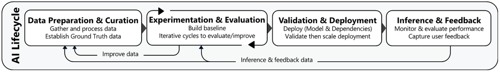
Domain 5 asks one question in many forms. How do you prove a GenAI application works? How do you fix it when it does not work? The proof half is evaluation.
Use automatic metrics for objective checks. Use LLM-as-a-judge for human-like quality at scale. Use human reviewers for subjective judgment. Use RAG-specific evaluations for retrieval and faithfulness. Use evaluation loops and A/B tests.
These keep the application honest as prompts and models change. The fix half covers troubleshooting. This includes throttling, guardrail blocks, agent tool failures, knowledge base sync problems, and embedding mismatches. Debug these with CloudWatch and CloudTrail. Use grounding checks, red-teaming, and CI/CD gates. These keep bad changes out of production.
1. Why testing generative AI is different
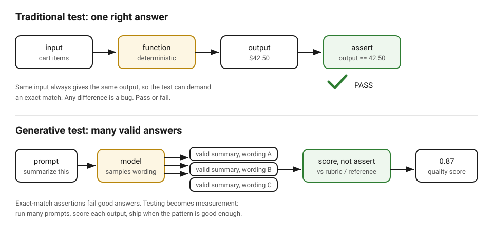
Start with the test you know. A traditional function is deterministic. The same input always produces the same output. So you test it with assertions.
A test for a checkout total says the result must equal 42.50. It must be character for character. Any difference is a bug. One input, one correct output. Pass or fail.
A generative model breaks all three assumptions that the test uses. First, there is no single correct output. Ask ten good writers to summarize the same article. You get ten different summaries.
All summaries are correct. An exact-match assertion would fail nine of them. Second, the output is nondeterministic. Run the same prompt twice.
The wording changes. This is because generation samples from probabilities. The temperature setting controls the amount of randomness. Near 0 is focused and repeatable. Higher is more varied. Third, failures do not throw errors.
A wrong answer arrives as confident, fluent prose. There is no stack trace. There is no exception. There is no red test. The bug and the feature look the same. They look the same until a human reads the words.
This is the problem that the domain solves. You cannot get quality by only making claims. Testing a generative application is not checking one output against one answer. It measures behavior across many outputs. You must decide if the pattern is good enough to ship.
The eval is the unit of that measurement. An eval (evaluation) has three parts. First, it has a dataset of prompts. These prompts show what users will ask.
Second, it has a run. The run feeds each prompt to the model. It collects the outputs. Third, it has a scoring step. The scoring step judges each output.
The rest of this book shows scoring methods. They go from the cheapest to the most human. Chapter 2 starts with exact functional checks. These checks are for cases where you know the answers. Chapter 3 teaches the datasets and metrics. These checks need the datasets and metrics.
Chapter 4 gives subjective scoring to a second model. This model acts as a judge. Chapter 5 brings humans in for the final word. Chapters 6 and 7 keep the application honest over time. They use eval loops on every change. They use A/B tests on live traffic.
The fix-it half follows. It includes troubleshooting signatures. It includes debugging with CloudWatch and CloudTrail. It includes grounding checks. It includes red-teaming. It includes CI/CD gates.
You will see three terms in every chapter. We define them one time here. Ground truth is the known-correct answer.
It is attached to a prompt. It is the label that your scoring compares against. Deterministic means the same input always gives the same output. A traditional test is deterministic.
A model call is not deterministic. Temperature is the generation setting. It controls randomness. It shapes wording. It never shapes correctness. It is never a cost control.
Look at the diagram. On the left is the traditional test. One input enters a function. One output comes out. The assertion compares it to the single expected value.
On the right is the generative test. One prompt enters the model. Several different wordings come out. All wordings are valid. A scoring step replaces the assertion.
The scoring step judges each output. It uses a rubric or a reference. It produces a score. It does not produce a verdict. The exam's main idea starts here. Never use an exact-match test for an open-ended output.
What AWS actually tests (the evaluation matrix)
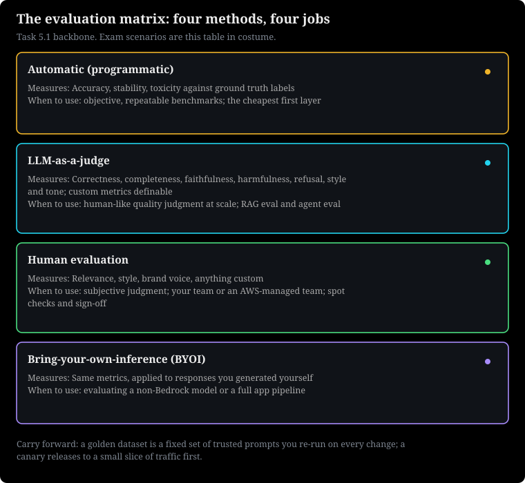
Memorize this table. It is the main part of Task 5.1. Several exam questions are this table. They have a scenario costume.
| Method | What it measures | When AWS wants it |
|---|---|---|
| Automatic (programmatic) | Accuracy, stability, toxicity. It needs ground truth labels. These are the known-correct answers. We define them in chapter 1. | Objective, repeatable benchmarks |
| LLM-as-a-judge | Correctness, completeness, faithfulness, harmfulness, refusal, style and tone. You can define custom metrics. | Human-like quality at scale. RAG eval. Agent eval. |
| Human | Relevance, style, brand voice, anything custom. | Subjective judgment. Use own employees or an AWS-managed team. |
| Bring-your-own-inference (BYOI) | Apply the same metrics to your own responses. | Evaluate a non-Bedrock model. Evaluate a full application pipeline. |
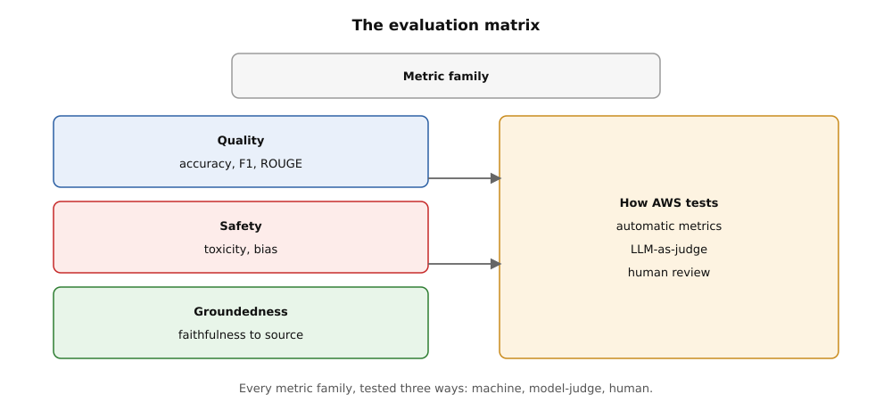
How to read this. The left column names quality, safety, and groundedness with their metrics. The right box names automatic metrics, LLM-as-judge, and human review. Arrows link each family to all three methods, so every family gets a machine test, a judge test, and a human test.
How AWS asks this domain
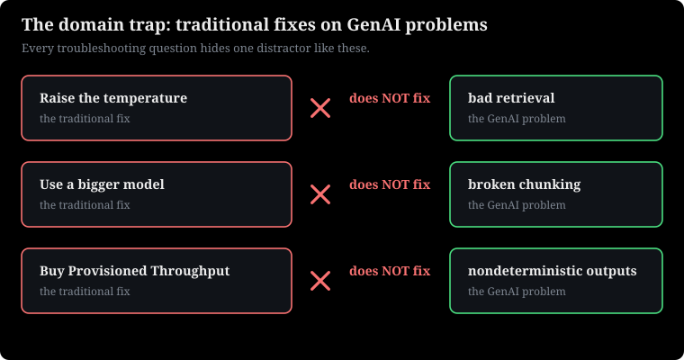
The questions are always scenario-based. You will see questions like: "A team must compare two models. They need to check summarization quality. They also need to check brand voice." The correct answer uses two methods. It uses LLM-as-a-judge for scale.
It uses human evaluation for brand voice. Each chapter teaches its method from the start. Remember two terms: A golden dataset is a fixed set of trusted prompts. You run these prompts again after every change. A canary is a release to a small part of traffic first. Chapter 7 teaches both terms fully.
The domain-wide trap.
Debug GenAI like a traditional application. Temperature does not fix bad retrieval. Bigger models do not fix broken chunking. Provisioned Throughput does not fix output randomness. Every troubleshooting question in this domain has one wrong answer. This answer applies a traditional fix to a GenAI problem.
Why this comes next. Chapter 1 showed why GenAI testing is different from traditional testing. Chapter 2 starts the measurement toolkit. It uses automatic evaluation. This is the cheapest and fastest layer.
2. Automatic (programmatic) evaluation in Bedrock
As you learned in D1, evaluation starts with the basics. This domain tests whether you can run it in production.
Bedrock Evaluations is a managed service. It runs model evaluations for you. Automatic evaluation is its cheapest and fastest mode. Code computes the metrics. Humans are not involved. A judge model is not involved.
Deterministic scoring against known answers
Automatic evaluation is also programmatic evaluation. It compares model outputs to known-correct answers. It uses deterministic code. You provide a prompt dataset.
Each prompt has a ground truth label. This label is the correct answer you already know. Bedrock runs your prompts through the model. Then it scores each output.
It uses built-in metrics. The built-in metrics include accuracy. (Did it get the right answer?) They include stability. (Does the answer stay correct after small prompt changes, like typos or rewording?) The Bedrock console calls this metric "robustness." They also include toxicity. (Does the output have harmful content?) You can also use custom datasets. You can define the scoring logic.
An evaluation job needs four items. It needs the model to evaluate. It needs the prompt dataset. Store this dataset in Amazon S3 as JSONL. (JSON Lines has one record per line.) It needs an output S3 location for the results.
It needs the evaluation configuration. This configuration names the metrics. Bedrock does the rest. It writes a report. You can open this report in the console.
Without automated scoring, a human must re-read hundreds of outputs. This happens after every prompt or model change. This does not scale. It is inconsistent.
The same reviewer scores the same answer differently. This happens on Monday and Friday. Automatic evaluation gives you a repeatable number. You can track this number after every change.
This is what a regression gate needs. A regression gate is a pipeline step. It stops a deployment if quality scores drop. Chapter 7 builds the full loop. If a prompt edit drops accuracy from 94 percent to 81 percent, you find it. You find it before users do.
The job takes your JSONL from S3. Each line is a prompt and its ground truth. For example, {"prompt": "Classify this ticket...", "referenceResponse": "billing"}. The job calls your chosen model one time for each prompt.
You pay for model calls like other calls. The job runs without delay. A 5,000-prompt dataset does not stop. Then, the job runs scorers on each output. The scorers are exact-match or similarity comparison.
They check accuracy against ground truth. They run again with changed prompts for stability. They check for toxicity. Scores become per-metric averages and per-prompt detail rows. The job writes them to your output S3 bucket. It shows them in the console with charts.
The scorer does not read meaning. It compares strings and labels. This makes automatic evaluation fast and cheap.
This is also why it cannot judge style, tone, or complex correctness. It needs ground truth. Someone must label the dataset correctly first. Bad labels give sure, wrong scores.
Here is an example. Evaluate a ticket classifier on 1,000 labeled prompts. Automatic accuracy is 0.93. This means 930 of 1,000 outputs matched the ground truth label exactly.
Test stability by running a sample with small prompt changes. For example, 45 of 50 changed prompts still classify correctly. This gives a stability score of 0.90. Toxicity is 0.00.
Total inference cost is 1,000 calls of a small model. This costs about 0.1 cent for 1,000 input tokens. This is a few dollars at most. For example, a full automatic evaluation on 1,000 prompts usually finishes in minutes. It costs less than a coffee. So, use it in every CI pipeline.
Trap.
Do not use automatic evaluation for subjective quality. This includes brand voice, style, or "helpfulness." Programmatic scorers compare labels. They cannot tell you if a summary sounds like your brand.
The exam will offer "run automatic evaluation with the accuracy metric" as a wrong choice. This is for any case that talks about tone, style, or voice. For subjective metrics, use LLM-as-a-judge for scale. Also use human evaluation for the final decision.
Read the diagram. Your JSONL prompt dataset is in S3 on the left. It has one card for each prompt and its ground truth label. You make this dataset.
The arrow to model inference shows Bedrock calling your model one time for each prompt. This happens without delay. If this step fails, check IAM permissions on the model. Also check your S3 paths first.
On the right, scorers compute accuracy, toxicity, and stability. They use code, not a model. The bottom strip compares each output with its ground truth row. It adds them up. The report shows the average and the per-prompt errors. So you can check failures.
Exam framing.
A team needs a repeatable, low-cost way to benchmark three models on a 2,000-question labeled QA set before choosing one for production. Correct: automatic evaluation with accuracy metrics. Distractors: LLM-as-a-judge (it costs more than needed for an objective labeled set).
Distractors: human evaluation (it is too slow and costly for 2,000 questions). "Have developers read a sample" (it is not repeatable). Look for the word "labeled" in the question. Labeled data and objective scoring is the automatic-evaluation signal.
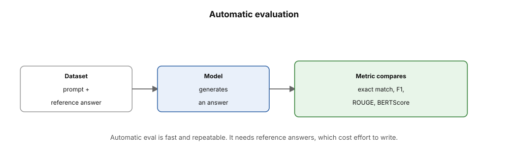
How to read this. Read left to right: the dataset, the model, the metric. Exact match, F1, ROUGE, and BERTScore each compare text to the reference. It is fast and repeatable, but reference answers cost effort to write.
Questions
MULTIPLE CHOICE
EASY
A startup has 3,000 customer questions. Each question has the correct answer category label. They need a cheap, repeatable benchmark. They want to choose between two small models for a classification task. Which approach is MOST correct?
- A. Run a Bedrock automatic evaluation job with the accuracy metric on the labeled dataset.
- B. Assemble a human evaluation team. The team must read all 3,000 outputs from both models.
- C. Run an LLM-as-a-judge evaluation. Score style and tone.
- D. Deploy both models to production. Compare user complaints.
MULTIPLE CHOICE
MEDIUM
An automatic evaluation job on a labeled support-ticket dataset shows 0.97 accuracy. But the team sees the model still makes toxic phrases in some apology responses. The job used only the accuracy metric. What must the team do?
- A. Use a bigger model. Run the same job again.
- B. Add the toxicity metric to the evaluation configuration. Run the job again.
- C. Use a human evaluation team. Do not use automatic evaluation.
- D. Make the dataset bigger to 10,000 prompts. Run accuracy again.
MULTIPLE RESPONSE
HARD
A team uses automatic evaluations. This is a regression gate in their CI pipeline. Select TWO true statements about automatic evaluation in Amazon Bedrock.
- A. It needs ground truth labels in the prompt dataset. This computes metrics like accuracy.
- B. It can score subjective qualities. These qualities are brand voice and writing style. This scoring is reliable.
- C. It supports built-in metrics. These metrics include accuracy, stability, and toxicity.
- D. It uses a separate judge foundation model. This model scores each output for faithfulness.
Why this comes next. Automatic metrics need labeled ground truth. Chapter 3 shows how to bring your own datasets. It also shows how to choose the correct metric for each task.
Next: Bring your own datasets. Choose metrics.
3. Bring-your-own datasets and choosing metrics
Bedrock has built-in datasets. These datasets cover general tasks. Your application is not general. This chapter shows how to use your own prompt datasets. It matches each task type to the correct metric.
Your prompts, the right metric
Bring-your-own (BYO) prompt datasets means you supply your own evaluation prompts. You do not use Bedrock's built-in prompts. Upload a JSONL file to S3. Each line in the file is a prompt.
The prompt can have ground truth, reference context, or metadata. Bedrock evaluation jobs accept this file. They accept it for all three methods: automatic, judge, and human. Bring-your-own-inference (BYOI) is a related option. You supply the model responses yourself.
Bedrock does not invoke the model. BYOI lets you evaluate any system. You can evaluate a model outside Bedrock. You can evaluate a full RAG pipeline. You can evaluate an agent with tools. You can replay last month's production responses for regression.
Built-in datasets test general capabilities. For example, they test "answer trivia questions." Your application answers questions about your product catalog. It answers questions about your policies. It answers questions about your ticket taxonomy. Only your own prompts measure what your users will experience.
Use prompts from real usage. The wrong metric can mislead you. Judging a summary with exact-match accuracy punishes good paraphrases. A better model scores worse. The metric must measure what the task needs.
The metric families are from first principles. Classification uses accuracy and F1. Classification has one correct label per input. Counting matches works.
Accuracy is correct predictions divided by total predictions. F1 score is the harmonic mean of precision and recall. Precision is: of the items labeled X, how many are truly X. Recall is: how many X items did the system label X?
Use F1 when classes are not balanced. A fraud detector labels everything "not fraud." It gets 99 percent accuracy on a 99-to-1 dataset. This detector is not useful. F1 shows this problem. Question answering uses exact match and token F1. Exact match is binary.
The answer string is equal to the reference, or it is not. Token-level F1 gives partial credit for overlapping words. This is fairer for longer answers. For open-ended QA with many valid phrasings, use LLM-as-a-judge correctness. Summarization uses ROUGE. ROUGE (Recall-Oriented Understudy for Gisting Evaluation) measures n-gram overlap.
It measures overlap between the generated summary and reference summaries. ROUGE-1 counts single words. ROUGE-2 counts word pairs. ROUGE-L counts the longest common subsequence. It rewards covering the reference's content. It does not reward matching its exact wording.
All three metrics are string-comparison metrics. They need reference texts or labels. They run in a deterministic way. They do not see paraphrase quality beyond word overlap. This is the point where you use a judge model.
Here is an example. The system evaluates a ticket classifier on 1,000 tickets. It gets 950 correct. The accuracy is 0.95.
The "urgent" class has only 40 tickets. The model caught 20 of them. It mislabeled 30 normal tickets as urgent. Precision for urgent is 20/50 = 0.40. Recall is 20/40 = 0.50.
F1 is 0.44. The accuracy of 0.95 hides an F1 of 0.44. This F1 is for the most important class. This is the example the exam wants you to know. Accuracy lies on imbalanced data. F1 tells the truth.
precision = TP / (TP + FP) recall = TP / (TP + FN)
F1 = 2 × precision × recall / (precision + recall)
Here is what the terms mean: TP is truly-urgent tickets caught. FP is normal tickets mislabeled urgent. FN is urgent tickets missed. Use the numbers above. Precision = 20 / 50 = 0.40.
Recall = 20 / 40 = 0.50. F1 = 2 × 0.40 × 0.50 / 0.90 = 0.44. The accuracy of 0.95 hides an F1 of 0.44. This F1 is for the important class. Accuracy lies on imbalanced data. F1 tells the truth.
For summarization, a ROUGE-L of 0.62 means this. The generated summary shares a longest common subsequence. This subsequence covers 62 percent of the reference content. This is against two reference summaries.
Here are example ranges: ROUGE-L above 0.5 is usually good for news-style summarization. ROUGE-L below 0.3 usually means the summary misses the main point. Always compare against a baseline. Never compare against an absolute bar.
Trap.
Use one preferred metric for every task. The exam's preferred distractor is "run automatic evaluation with accuracy." This is for a summarization or open-ended QA scenario. Accuracy needs exact labels.
Summarization has no single correct string. Match the metric to the task. Classification gets accuracy/F1. Extractive QA gets exact match.
Summarization gets ROUGE. Anything subjective or open-ended gets a judge model or humans. Here is a second trap: BYOI confused with fine-tuning data. BYOI is evaluation input. It includes prompts and your own generated responses. It trains nothing.
Read the diagram. The left column shows the three task families. AWS names these families. Your BYO dataset rows have a task tag.
Each row goes to its metric. The routing rule is this: Summarization goes to ROUGE-L. Question answering goes to exact match or token F1. Classification goes to accuracy or F1. Each right chip shows the metric and its icon.
Overlap is for ROUGE. Target is for exact match. Grid is for F1. The icon shows what the metric counts. This is what breaks: If a summarization row uses accuracy, good paraphrases get zero. If an imbalanced classification row uses only accuracy, the majority class hides minority-class failures.
Exam framing.
"A team evaluates a fraud classifier. 1 percent of transactions are fraud. Which metric must they use?" Correct: F1 (or precision/recall). Accuracy has too much of the majority class.
Distractor: accuracy. For summarization: "compare two summarization models" means ROUGE or judge-based correctness/completeness. The distractor is exact match. For BYOI: "evaluate responses from a model hosted outside Bedrock" or "evaluate the full RAG pipeline end to end" means bring-your-own-inference. Bedrock cannot invoke what it does not host.
Questions
MULTIPLE CHOICE
EASY
A team makes a classifier. The classifier sends support tickets to 12 categories. They have 2,000 labeled tickets from production. Which evaluation setup is MOST correct?
- A. Bring their labeled tickets as a BYO dataset. Run automatic evaluation with accuracy and F1 metrics.
- B. Use Bedrock's built-in trivia dataset with the ROUGE metric.
- C. Run LLM-as-a-judge scoring style and tone on unlabeled tickets.
- D. Measure average output token count per category.
MULTIPLE CHOICE
MEDIUM
A fraud-detection classifier has 0.99 accuracy on old data. But the business reports that most fraud still passes. Only 0.5 percent of transactions are fraud. What is the BEST metric change?
- A. Keep accuracy. 0.99 shows the model works. The business reports are not facts.
- B. Change to F1 score. Put emphasis on recall for the fraud class.
- C. Change to ROUGE-L. Measure answer overlap.
- D. Run the evaluation with a larger judge model.
MULTIPLE RESPONSE
HARD
A team wants to check their full production RAG pipeline. This includes retrieval and generation. The generator is a model outside Bedrock. Select TWO correct statements.
- A. They can use bring-your-own-inference. They submit their own prompt-response pairs for evaluation.
- B. They must move the model to Bedrock. Then evaluation is possible.
- C. They should score summarization answers with exact-match accuracy.
- D. They can run LLM-as-a-judge faithfulness metrics. They use their own responses to check grounding.
Why this comes next. Some qualities have no formula. Chapter 4 adds the LLM-as-a-judge layer. A model scores outputs at a speed humans cannot match.
Next: LLM-as-a-judge evaluation.
4. LLM-as-a-judge evaluation
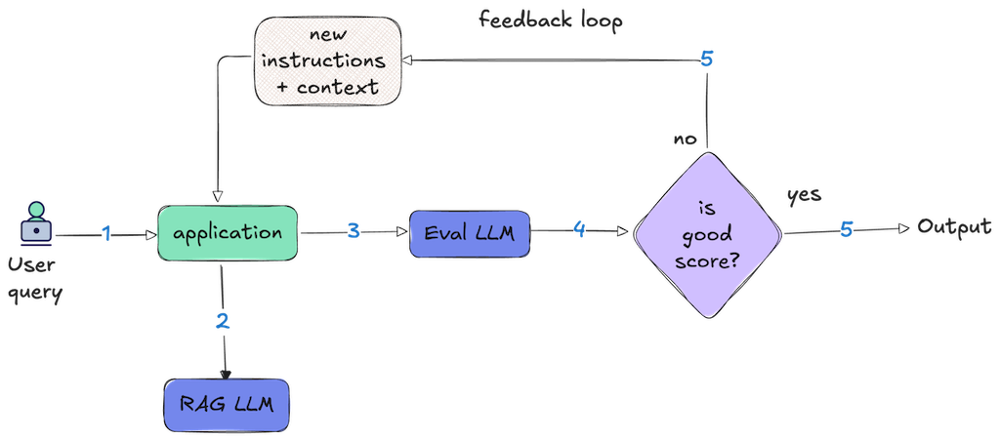
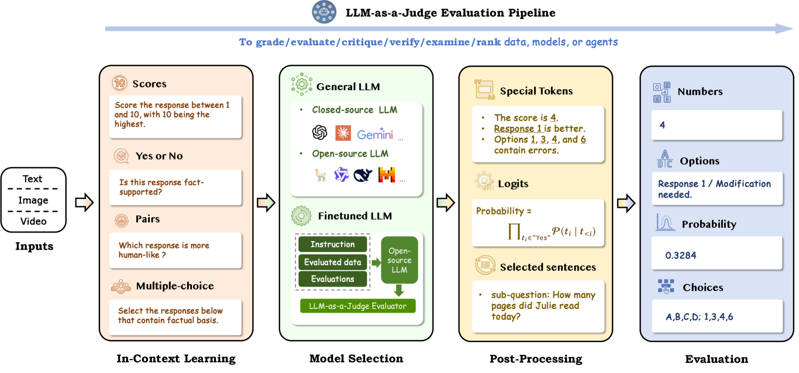
No ground truth label can show quality. You hire a second model to grade the first. Bedrock runs this as a managed evaluation job. It has built-in and custom judge metrics.
A second model grades the first
LLM-as-a-judge is an evaluation method. A foundation model scores another model's outputs. It uses a rubric you define. The judge model reads the prompt, the candidate response, and sometimes reference material.
It does not compare strings to labels. Then it returns scores for metrics. These metrics include correctness, completeness, faithfulness, harmfulness, refusal, and style and tone. Correctness means the answer is right. Completeness means it covers all requests.
Faithfulness means the source supports every claim. This is the anti-hallucination metric. Harmfulness means the content is unsafe. Refusal means it correctly declined what it should decline. You can also define custom metrics in plain language. For example, "scores 1 to 5 on how well the response matches our brand voice: direct, warm, no jargon."
In Bedrock, this runs as an evaluation job. You pick the candidate model, the prompt dataset, the judge model, and the metrics. The judge is usually a larger, more capable model than the candidate. A weak judge cannot reliably grade a strong candidate.
It may share its blind spots. Bedrock invokes the candidate. Then it invokes the judge. It writes scored results to S3.
Automatic metrics stop when quality is subjective. They also stop when the task has many valid answers. A summary can be good in ten different wordings. Exact-match scoring calls nine of them wrong. Human review handles this. But it costs dollars per response and days per round.
LLM-as-a-judge is in the middle. It is like human judgment at machine speed. It has near-machine cost. So you can score thousands of responses. You can check tone, faithfulness, and completeness. Do this every time a prompt changes.
This uses two model invocations per prompt per metric set. So cost and latency increase with dataset size and judge model choice. The flow is: candidate generation, judge prompt assembly, judgment, aggregation. Candidate generation: each prompt goes to the candidate model.
The system captures the response. Judge prompt assembly: Bedrock builds a grading prompt. This prompt contains the original prompt, the candidate response, the metric rubric with its scale. It can also contain reference content or ground truth. Judgment: the judge returns a score per metric.
It usually gives a short reason. Aggregation: scores average across the dataset. The system stores per-prompt reasons. So you can check why a response scored a 2 on faithfulness. Bedrock's judge prompts randomize presentation order. They instruct the judge to ignore length.
This reduces position bias. Position bias means judges favor the first answer. This also reduces verbosity bias. Verbosiy bias means judges favor longer answers. A common pattern is to use a cheaper judge for large screening runs. Use a stronger judge for final comparisons.
This is an example. A RAG summarizer uses 500 prompts. A small, fast model is the candidate.
A flagship model is the judge. The candidate costs about $0.001 for each prompt. The judge costs about $0.02 for each prompt. The total cost is about $10.50.
The run finishes in less than one hour. The correctness score is 4.2 of 5. The faithfulness score is 3.6 of 5. The style score is 4.5 of 5. The faithfulness gap shows the team where to work. They must work on retrieval grounding, not tone.
Without the judge, the team would think the problem was the prompt style. They would waste one week. For the exam, remember this rule. The judge model cost is the main cost. Reduce the dataset or the judge model to reduce cost. The candidate model cost is usually small.
Trap.
Treat judge scores as true data. A judge model has biases. It likes longer answers. It likes its own model family's style.
It can be fooled by confident hallucinations. The exam tests this with scenarios. For example, a team trusts judge scores completely. The team removes human spot-checks. The correct method is to use a judge for scale.
Also, use human spot-checks on a sample. This calibrates the judge. There is a second trap. Do not use the same small model as both candidate and judge. A weak judge cannot grade a strong candidate well. This is like a blind person grading a sighted person.
Read the diagram. Answers A and B on the left are outputs. They come from one or two candidate models.
They use the same prompt. For model comparison, both go to the judge. The presentation order is random. This fights position bias.
The center judge model is a separate model. It is usually a larger model. It is not the model under test. It gets the prompt, the answer, and the rubric. The scorecard on the right shows scores for each metric. Faithfulness finds hallucinations.
Harmfulness finds unsafe content. The system stores the reason for each score for audit. What can go wrong? If the judge is too weak, the scores are not good. If the rubric is not clear, the scores are not consistent. First, calibrate with a human-labeled sample.
Exam framing.
A team must evaluate 5,000 RAG answers. They must check faithfulness and completeness. This is before a production rollout. Human review would take weeks.
Correct: Use Bedrock LLM-as-a-judge evaluation. Use faithfulness and completeness metrics. Distractors: Automatic evaluation is wrong. There is no true data for open-ended answers. The accuracy metric does not measure faithfulness.
Human-only evaluation is too slow. Spot-check 20 by hand is not statistically meaningful. Also, watch for agent evaluation. Measure task completion and tool-use effectiveness for an agent. This is judge work. No string metric can show multi-step reasoning quality.
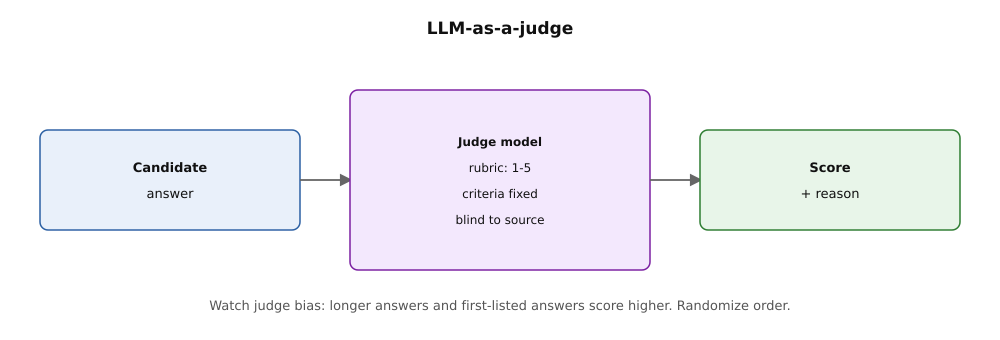
How to read this. The candidate answer enters the judge. The judge applies the rubric, blind to the source, and returns a score with a reason. Randomize answer order, because judges favor first and longest.
Questions
MULTIPLE CHOICE
EASY
A team must score 4,000 chatbot responses. They must check faithfulness to source documents. They must check correct refusal of disallowed requests. There are no true labels. Which Bedrock evaluation method is BEST?
- A. Automatic evaluation with the accuracy metric.
- B. LLM-as-a-judge evaluation with faithfulness and refusal metrics.
- C. Human evaluation by the team's own employees reading every response.
- D. CloudWatch Logs Insights queries over invocation logs.
MULTIPLE CHOICE
MEDIUM
A team uses a small, cheap model. They use it as the candidate. They also use it as the judge.
This is in an LLM-as-a-judge evaluation. The scores look too high. They do not agree with a human spot-check. What is the MOST probable cause?
- A. The prompt dataset is too small to be statistically valid.
- B. A weak judge model cannot reliably grade outputs. It may share the candidate's blind spots.
- C. The evaluation job must use automatic metrics instead.
- D. The S3 output bucket does not have versioning. This corrupts the scores.
MULTIPLE RESPONSE
HARD
A company evaluates a customer-support RAG assistant with LLM-as-a-judge. Select TWO practices that make the evaluation trustworthy.
- A. Calibrate the judge. Compare its scores with human labels on a sample. Do this before you trust full-run results.
- B. Use the same model as candidate and judge. This keeps behavior consistent.
- C. Define custom metrics in plain language. Do this for company-specific qualities like brand voice.
- D. Run the judge with high temperature. This gets diverse opinions per response.
Why this comes next. Judge models are fast. But, they need calibration. Chapter 5 covers human evaluation. It is the gold standard for subjective quality. It keeps judges honest.
Next: human evaluation workflows.
5. Human evaluation workflows
Only a person can judge some things. Bedrock human evaluation organizes reviewers, instructions, and agreement measurement. It makes a managed workflow.
People, rubrics, and agreement
Human evaluation is a Bedrock evaluation method. People read model outputs. They score the outputs with your rubric. You define the metrics. The metrics can be relevance, style, brand voice, or custom metrics.
Write rating instructions. The instructions tell reviewers what each score means. Assemble a work team. The team can be your employees. The team can be an AWS-managed team.
AWS manages crowd reviewers with SageMaker Ground Truth. Bedrock shows each response to many reviewers. Bedrock measures inter-rater agreement. This shows how often reviewers agree. This tells you if the instructions are clear. You can trust the scores if the instructions are clear.
No metric or judge model can reliably make these judgments. These judgments are brand voice, cultural nuance, legal appropriateness. They also include if customers will trust an answer. Human evaluation is the best method for subjective quality. It is the calibration source.
It keeps LLM-as-a-judge honest. It also meets governance needs. Regulators and internal policy need a human to review outputs. This is for high-risk use cases. This review must happen before launch.
The workflow runs in four stages:
- Setup. Make a human evaluation job. Choose the model outputs to review. Bedrock generates the outputs.
- Or you can bring your own outputs. Define custom metrics. Use 1 to 5 scales. Write anchors like "5 = ...". Attach rating instructions.
- Assignment. The system gives responses to reviewers. This usually has overlap. Two or three reviewers see each response. This allows measurement of agreement.
- Review. Reviewers score each response in a web UI. Bedrock tracks timing. It flags reviewers who rush.
- Aggregation. The system averages scores per response. It averages scores per metric.
- It computes inter-rater agreement. Low agreement on a metric means the instructions are not clear. You must rewrite the instructions. It does not mean the model is bad.
The workflow is not synchronous. It takes hours to days, not minutes. Cost increases with reviewers times responses. Human evaluation covers samples. It does not cover entire datasets.
Here is an example. A team evaluates 300 support answers. They evaluate brand voice on a 1 to 5 scale.
Three employees review each answer. This is 900 individual ratings. Each rating takes 2 minutes. The team spends 30 reviewer-hours.
reviewer-hours = responses × reviewers per response × minutes per rating / 60
Use the numbers above. 300 responses × 3 reviewers × 2 minutes = 1,800 minutes. This equals 30 reviewer-hours. Cost increases with reviewers times responses.
Human evaluation covers samples. It does not cover entire datasets. The layered pattern uses automatic metrics for scale. It uses LLM-as-a-judge for breadth. It uses humans for subjective quality.
300 responses is a calibration sample at that cost. It is not a regression suite. Agreement is 0.82 on "accuracy". Agreement is only 0.54 on "warmth".
This tells the team the warmth instructions are vague. They rewrite the anchors. They add concrete examples. For example, "warmth 5: acknowledges the customer's frustration by name before answering". They re-run on 100 responses.
Agreement rises to 0.78. That rewritten rubric becomes a custom metric. This metric is for LLM-as-a-judge at scale. This is the standard pattern. Human evaluation calibrates. Judge evaluation scales.
Trap.
Human evaluation is the most accurate. It is the least scalable. The exam will offer "have the team review all outputs" as a wrong answer for a large scenario. The correct method is layered.
Use automatic metrics for the main part. Use LLM-as-a-judge for subjective scale. Use human evaluation for samples. Use human evaluation for calibration. Use human evaluation for final approval on high-risk changes.
Look at the diagram. Model responses on the left are a small part. They are not the full data.
The sampling method is important. Include unusual cases and recent failures. Do not only include easy prompts. In the center, human reviewers are your employees.
They understand domain details. Or, use an AWS-managed team for scale. Multiple reviewers check each response. The right consensus card shows average scores. It also shows the agreement level. High agreement means the rules are clear.
Low agreement means fix the instructions. Do not blame the model. The bottom strip shows human evaluation's role. It is for calibration in the larger system. Its labels become the true data. This data checks automatic metrics and judge models.
Exam framing.
"Compare two models for summarization quality. Include brand voice." Correct: Use LLM-as-a-judge for scale. Also use human evaluation for brand voice. The exam uses the word "subjective" often.
If the question says quality is subjective, or mentions brand, tone, or culture, use human evaluation. Pair it with a scalable method. A second idea: "no in-house reviewers available" means use the AWS-managed team. Do not skip human review.
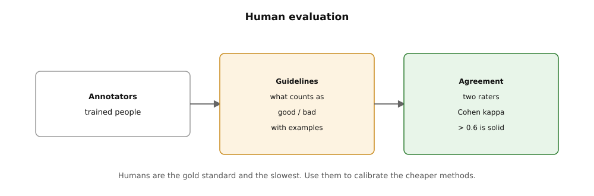
How to read this. Annotators read the guidelines with examples. Two raters score the same items, and Cohen kappa above 0.6 means solid agreement. Humans are the gold standard and the slowest, so use them to calibrate cheaper methods.
Questions
MULTIPLE CHOICE
EASY
A company must choose between two models. The models create marketing text. Matching brand voice is the most important rule. No employees can review the text. What is the BEST evaluation setup?
- A. Use automatic evaluation. Use the accuracy metric on a labeled dataset.
- B. Use LLM-as-a-judge for general comparison. Also use human evaluation with an AWS-managed review team for brand voice.
- C. Use CloudWatch metrics on token counts for both models.
- D. Test both models in production with an A/B test. Do not use evaluation.
MULTIPLE CHOICE
MEDIUM
After human evaluation, inter-rater agreement is 0.85 for correctness. It is 0.51 for helpfulness. What is the BEST next step?
- A. Decide the model is not helpful. Change models.
- B. Rewrite the helpfulness rating instructions. Add clear examples. Then, run again on a sample.
- C. Stop using the helpfulness metric. Reviewers do not agree.
- D. Increase the number of reviewers per response from two to five.
MULTIPLE RESPONSE
HARD
A regulated financial firm must validate a support assistant before launch. Select TWO roles human evaluation should play in the validation plan.
- A. Serve as the sole regression gate run on every code commit.
- B. Provide final sign-off on subjective qualities like tone and appropriateness for high-risk responses.
- C. Calibrate the LLM-as-a-judge by supplying trusted labels on a sample.
- D. Replace automatic metrics entirely because humans are more accurate.
Why this comes next. You have the evaluation methods. Chapter 6 uses these methods for RAG. It checks retrieval quality, faithfulness, and relevance. It finds problems with retrieval before generation.
Next: RAG evaluation, retrieval quality, faithfulness, relevance.
6. RAG evaluation: retrieval quality, faithfulness, relevance
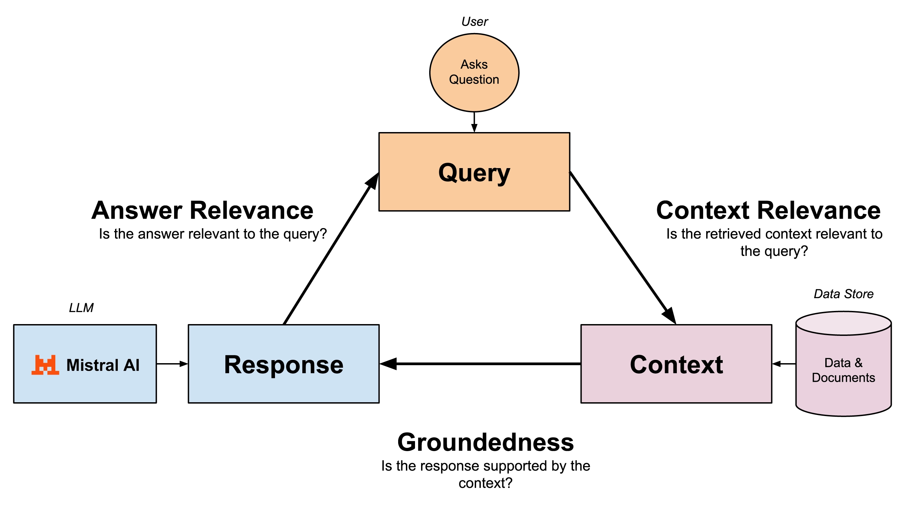
A RAG pipeline has two parts. The parts can fail separately. Evaluating only the final answer does not show which part failed. RAG evaluation scores retrieval and generation separately.
Score the retriever and the generator apart
RAG evaluation measures a retrieval-augmented generation pipeline in two stages. Retrieval quality asks: did the retriever find the correct chunks? Metrics include relevance. This checks if the retrieved chunks are on topic.
Recall at k checks how many chunks with the answer appear in the top k retrieved chunks. Precision at k is another metric. Generation quality asks: did the model answer well with the retrieved chunks? The key metric is faithfulness.
This means every factual claim in the answer must come from the retrieved context. Answer relevance is a related metric. This checks if the answer addresses the question. In Bedrock, LLM-as-a-judge powers RAG evaluation with these metrics. It often runs against a dataset of questions. The dataset has documents that should answer the questions.
A common RAG failure is a confident, fluent, wrong answer. Teams blame the model. They use a bigger model or a lower temperature. The real failure is often upstream. The retriever returned irrelevant chunks.
Or the correct chunk was split. The model answered from bad context. You cannot tell if the system retrieved bad data and answered correctly. You cannot tell if the system retrieved good data and made up an answer. You need separate retrieval and generation scores. Then you can fix the correct part.
This is how it works: Make a dataset. It has question-plus-source pairs. Each pair has a question. It has the chunks that the system must retrieve. It can have a reference answer. Run retrieval.
Each question goes to the knowledge base. Bedrock's Retrieve API gives the ranked chunks. The system computes relevance and recall at k. It compares these to your expected chunk set. Code or a judge does this. Run generation.
The retrieved chunks and the question go to the generator. The judge model scores faithfulness. It checks each claim in the answer against the retrieved chunks. It scores answer relevance. It checks the answer against the question. Then diagnose.
The score pair tells the story. Low retrieval and low faithfulness mean you must fix retrieval. Fix chunking, embeddings, hybrid search, or reranking. High retrieval and low faithfulness mean you must fix generation. Fix grounding instructions, contextual grounding checks, or use a lower temperature. Low answer relevance with good retrieval means the prompt or question handling is wrong.
Here is an example. A support RAG with 200 questions shows retrieval recall at 5 of 0.70. This means the answer chunk is not in the top 5 retrieved for 30 percent of questions. Faithfulness is 0.62. The team first fixes chunking.
They change from fixed-size to hierarchical chunking for their manuals. They add a reranker. Recall at 5 goes up to 0.88. Faithfulness goes up to 0.81. They do not change the generator or the prompt.
The numbers showed the failure was upstream. The fix was one configuration change. It was not a model swap. Cost example: A judge-based RAG evaluation on 200 questions costs tens of dollars. It takes less than one hour. Run it after every chunking, embedding, or prompt change.
Trap.
Do not fix bad retrieval by changing the generation model. This is the most common Domain 5 trap. If retrieved chunks are not relevant, no model can make a correct answer. A bigger model will make up more fluent answers.
The exam question gives clues. "Retrieved chunks look relevant but answers are wrong" means a generation or grounding problem. "Answers cite facts not in the documents" means check retrieval first, then faithfulness. Always diagnose retrieval before generation.
Look at the diagram. The top part shows retrieval quality. The query goes into the document stack.
The system retrieved blue documents. The blue documents are relevant. Gray documents have the answer but were not retrieved. The gauge shows relevance at k. Misses here mean chunking, embedding, or ranking failures.
The bottom part shows generation faithfulness. It shows the model's answer. Thin lines connect each sentence to a highlighted source line. There is a green check. The red-X sentence has no source line. This is a made-up answer.
The faithfulness metric finds it. Read the pair. Blue documents plus red-X sentences mean the generator ignores good context. Gray documents plus grounded-but-incomplete answers mean retrieval gives too little information to the generator. What breaks: If you evaluate only the final answer, these signals combine. This points the fix to the wrong part.
Exam framing.
"A RAG application gives confident but wrong answers. The retrieved chunks look relevant." The correct first step is to evaluate faithfulness and grounding of the generation step. This is because retrieval looks good. Another case: "Answers cite facts not in the source documents." This means you must evaluate retrieval quality and faithfulness.
In both cases, "switch to a larger generation model" is a wrong answer. "Lower the temperature" is wrong too. Also look for agent evaluation that looks like judge evaluation. "Evaluate an agent's task completion and tool-use effectiveness" is LLM-as-a-judge. It uses agent metrics. This is similar to RAG evaluation.
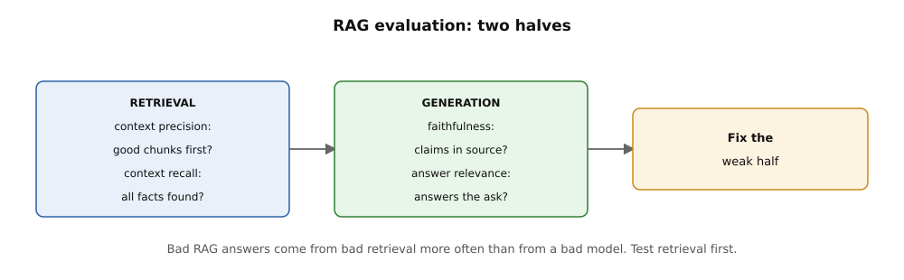
How to read this. The left box asks: did retrieval find the right chunks in the right order. The right box asks: is every claim in the source, and does the answer match the ask. Test retrieval first, because most bad answers start there.
Questions
MULTIPLE CHOICE
EASY
A RAG support assistant gives fluent answers. The answers cite policy details. These details are not in the retrieved documents. Retrieval relevance scores are high. What must the team evaluate and fix first?
- A. Change the embedding model to a multilingual model.
- B. Evaluate generation faithfulness. Make grounding of answers to retrieved context stronger.
- C. Increase the knowledge base sync frequency.
- D. Add more documents to the knowledge base.
MULTIPLE CHOICE
MEDIUM
After a chunking strategy change, a RAG evaluation shows recall at 5 dropped from 0.90 to 0.71. Faithfulness stayed at 0.85. What is the correct interpretation?
- A. The generator makes errors. It needs a lower temperature.
- B. The new chunking makes retrieval bad. The generator uses the information it gets. Change or adjust chunking.
- C. The judge model is wrong. Discard the run.
- D. The prompt needs better instructions for grounding.
MULTIPLE RESPONSE
HARD
A team starts continuous RAG evaluation. Select TWO metrics and their correct places.
- A. Recall at k. Measure this on the retrieval stage. Compare it to expected chunks that have answers.
- B. Faithfulness. Measure this on the generation stage. Check claims against the retrieved context.
- C. ROUGE-L. Measure this on the retrieval stage. Rank chunk similarity.
- D. Perplexity. Measure this on the generation stage. This is the main quality check.
Why this comes next. One evaluation run is a snapshot. Chapter 7 makes the loop. This includes regression testing, canary analysis, and golden datasets. These keep quality good.
Next: evaluation loops, regression, canary, and golden datasets.
7. Eval loops and iteration: regression, canary, golden datasets
Evaluation is not a one-time event. An evaluation loop re-runs your quality suite on every change. It blocks bad changes before users see them.
The loop that keeps bad changes out
An evaluation loop is a continuous process. You run your evaluation suite when something changes. This includes a prompt edit, a model swap, a chunking tweak, or a guardrail update. The loop has three main parts.
These parts are regression testing, golden datasets, and canary testing. Regression testing re-runs a fixed suite. It compares results to the last good baseline. This catches quality drops. Golden datasets are a curated, versioned set of prompts.
They have trusted expected outputs. They are a stable measure. Canary testing releases the change to a small part of traffic first. It watches real metrics before a full rollout. Bedrock evaluations give the score. Your pipeline triggers, compares, and gates.
Generative AI changes are small. They are also very destructive. Changing one sentence in a system prompt can change refusal behavior. This affects hundreds of prompts.
Swapping to a cheaper model can quietly make faithfulness worse. Without an evaluation loop, these problems reach production. Users find these problems. User complaints are the most expensive monitoring system. The loop changes "we think the new prompt is fine" to a measured comparison against a baseline.
First, curate the golden dataset. Collect 100 to 1,000 prompts. These prompts must cover your critical paths. Include common queries, edge cases, past failures, adversarial inputs, and safety probes.
Label expected outputs. Or, label the metric each prompt targets. Version it in S3 like code. Second, baseline.
Run the full evaluation suite. Use the current production configuration. Record the scores. This is the number for future comparisons. Third, change and compare. On each change, run the same suite.
Use the new configuration. Compare metric by metric. Check accuracy, faithfulness, toxicity, latency, and cost. A drop beyond your threshold fails the gate. Fourth, canary. If the offline evaluation passes, send a small part of live traffic to the new version.
This is often 1 to 5 percent. Watch production signals. Check user satisfaction, guardrail block rates, token costs, and error rates. Fifth, promote or roll back. Good canary metrics promote the change to 100 percent. Any problem rolls back to the previous version.
Prompt versioning makes this instant. The loop also needs semantic drift checks. These are periodic re-runs. They find slow quality decay. This happens when user behavior or source documents change. This happens even when no one edits a prompt.
A team manages a support assistant. It has a 400-prompt golden dataset. Their baseline is: faithfulness 0.88, refusal correctness 0.97, average cost $0.004 per conversation.
A prompt engineer shortens the system prompt. This reduces costs. The loop runs. Faithfulness drops to 0.79.
Refusal correctness drops to 0.91. Cost drops to $0.003. The gate threshold is "no metric may drop more than 0.03." So, the change fails before canary. The engineer finds the shortened prompt removed the grounding instruction. They restore it. They re-run the loop.
All metrics hold. Cost still drops 10 percent from tighter wording elsewhere. Without the loop, the 0.09 faithfulness drop would have shipped. A typical schedule is: full golden-dataset runs on every prompt or model change. Canary at 5 percent traffic for 24 hours on model swaps. Semantic drift checks weekly.
Trap.
Do not treat the golden dataset as write-once. If the dataset never gets new prompts from production failures, the loop passes an old test. Real quality gets worse.
The exam tests this indirectly. "The evaluation suite passes but users report new failure modes" means the golden dataset does not have those failure modes. The loop is only as good as the dataset's coverage. So, add prompts from every production incident to the golden set.
Read the diagram. The top box (change prompt or model) is the trigger. Any configuration change starts the loop.
This is like a commit starting CI. The right box (run evaluation suite) shows Bedrock evaluations. They score the new configuration on the golden dataset. This includes automatic, judge, and sampled human metrics.
The bottom box (compare to baseline) compares metrics. It compares against the last good run. Small differences pass. Drops beyond the threshold fail. The left box (gate pass or fail) is the main point. The red stop sign blocks a failed rollout automatically.
Passing gates go to canary. The center (golden dataset) is the stable measure. Everything compares against it. Curate it. Version it. Grow it with every incident.
Exam framing.
"A team must validate every prompt change before production with minimal manual effort." Correct: use automated regression testing on a golden dataset. Use evaluation gates in the deployment pipeline.
Distractors: manual review of each change (this does not scale). Canary without offline evaluation (this shows users unvetted changes). Or "trust the prompt engineer's judgment." "Detect slow quality decay over months" means scheduled semantic drift checks and continuous evaluation. It does not mean one-time testing.
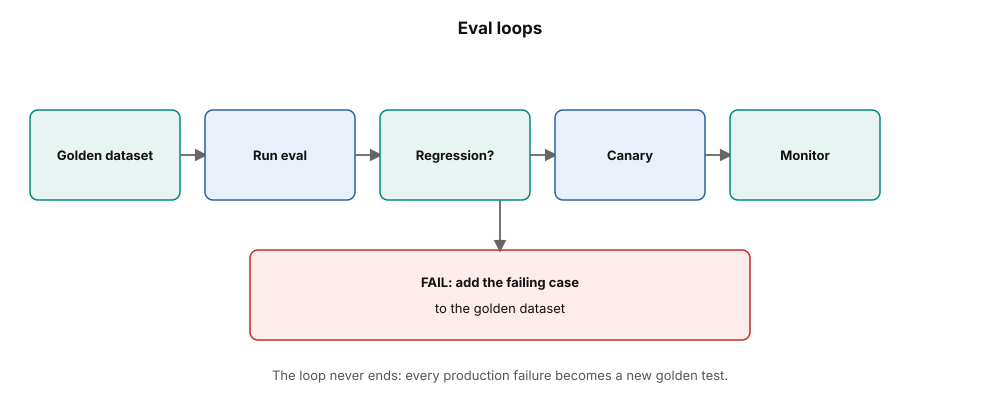
How to read this. Follow the boxes left to right. Each change runs the golden set. Regressions block the deploy, canary watches real traffic, and the red box feeds failures back into the golden set.
Questions
MULTIPLE CHOICE
EASY
A team edits system prompts weekly. They want an automated check. This check must catch quality problems. It must catch them before each change reaches users. What should they implement?
- A. Regression testing: Run a versioned golden-dataset evaluation suite on every prompt change. Gate deployment on the scores.
- B. A canary deployment to 50 percent of traffic with no offline evaluation.
- C. A senior engineer does a manual review of every prompt diff.
- D. Do monthly user satisfaction surveys.
MULTIPLE CHOICE
MEDIUM
A team's golden-dataset suite passes every time. But production users report new failures. These failures are about multi-turn follow-up questions. What is the MOST probable gap?
- A. The eval loop runs too often. It overfits the model.
- B. The golden dataset does not have multi-turn prompts. So the loop cannot see this failure mode.
- C. The canary percentage is too low. It cannot find the failures.
- D. The judge model needs a higher temperature.
MULTIPLE RESPONSE
HARD
A company deploys a new model version for a support assistant. Select TWO steps that make a correct validation sequence.
- A. Run the golden-dataset eval suite offline. Compare metrics against the production baseline.
- B. Deploy to 100 percent of traffic at once. Then evaluate with user feedback.
- C. If offline evals pass, canary the new version on a small traffic slice. Monitor guardrail blocks, cost, and error rates.
- D. Do not compare with the baseline. The new model has better published benchmarks.
Why this comes next. Offline evaluations measure what you want to test. Chapter 8 lets production traffic decide. It uses A/B testing for prompts and models.
Next: A/B test prompts and models.
8. A/B testing prompts and models
Two options can look good offline. Let production traffic decide. A/B testing sends real users to different versions. It measures the difference.
Let real traffic pick the winner
A/B testing is online experimentation. It serves two or more versions to different parts of live traffic. It compares their results. In GenAI, the versions are usually prompt versions. Bedrock Prompt Management has variants for this. Or the versions are model choices.
For example, a small model versus a flagship model, or an old model versus a new model. Traffic splits. It commonly splits 50/50 for a clear result. It splits 90/10 when the new version has more risk. The system collects metrics for each version. These metrics are task success, user satisfaction signals, guardrail block rate, latency, and cost per conversation.
Offline evaluations measure what you want to test. Production measures what users do. This includes many prompts your golden dataset did not imagine. A prompt with an offline score of 0.90 can lose to a 0.87 prompt online. This happens because real users phrase things differently.
Or the "worse" prompt is 40 percent cheaper with the same user satisfaction. A/B testing is also a fairness tool. The exam names A/B testing with prompt variants. This checks for biased results across demographic groups. Do this before you make a change.
An A/B test runs in four stages.
- Define variants. In Bedrock Prompt Management, make variants of a prompt. Use the same variables. Use different instructions.
- For models, the variants are model IDs. They are behind a routing layer. Lambda reads an AppConfig flag. This is the exam's standard pattern.
- Split traffic. A router gives each request to variant A or B. It is sticky per user or session. One user does not change between variants during a conversation. Sticky assignment is important. Mixed experiences corrupt satisfaction signals.
- Collect. Log metrics for each variant. Log task completion. Did the user accept the answer?
- Did the user retry or escalate? Log thumbs up/down. Log guardrail interventions. Log tokens and cost. Log latency percentiles.
- Decide. Compare with statistical awareness. Run the test long enough. The difference must be real, not noise. The winner becomes the new default. Keep the loser as a variant for the next round.
A/B testing and evaluation loops work together. The loop stops bad changes. The A/B test chooses the best good changes.
This is an example. A team uses A/B tests for two support prompts. They use a 50/50 split for 10,000 conversations each. Variant A has 78 percent first-answer resolution. It costs $0.0050 per conversation. Variant B has 76 percent resolution.
It costs $0.0028 per conversation. Resolution is different by 2 points. This is not important at this sample size. A statistics check shows it is not significant. But cost is different by 44 percent. The team uses variant B.
They save about $2.20 per 1,000 conversations. There is no measurable quality loss. This is a common GenAI A/B result. The cheaper variant wins because of cost. Quality is equal. Only live traffic can show equal quality.
Trap.
Do not confuse prompt variants with prompt versions. Versions are fixed snapshots for release and rollback. Variants are parallel choices for comparison. The exam will change the terms in wrong answers. "Create a new prompt version for each A/B arm" is wrong.
Versions are sequential releases. They are not parallel experiments. This is a second trap. A/B testing without sticky routing mixes variants. This happens within one user's session. It makes the comparison bad.
Read the diagram. One traffic arrow on the left splits into equal branches. The split ratio shows risk. Use 50/50 for speed. Use 90/10 for caution.
The branches (variants A and B) differ only in the test variable. This is the prompt text or the model. Everything else stays the same. This includes guardrails and retrieval. If not, the comparison is not valid.
The right dashboard shows win-rate bars for each variant. It shows quality, cost, latency, and safety. The check badge marks the winner. This happens only after statistical significance. It does not happen after the first hundred requests. What breaks: non-sticky routing (users change variants during a session), changing two things at once (prompt and model), or stopping the test at the first good result.
Exam framing.
"A team wants to compare two prompt wordings on live traffic. They want minimal code changes." Correct: Bedrock Prompt Management variants plus traffic splitting. Measure resolution and cost.
Distractors: deploying two separate applications. Or "pick the one with the better offline score." The question emphasizes real user behavior. Fairness: "verify a new prompt does not produce worse outcomes for any user group." This means A/B testing with segmented metrics. This is the exam's fairness-check pattern.
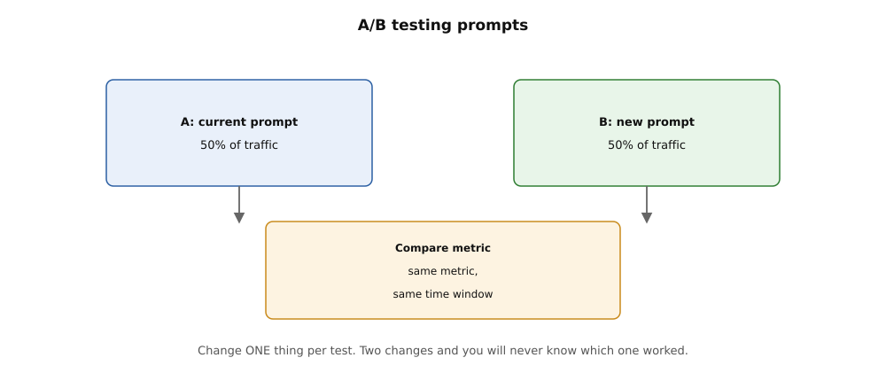
How to read this. The two boxes split traffic 50-50 in the same time window. The bottom box compares one metric. Change one thing per test, because two changes hide which one worked.
Questions
MULTIPLE CHOICE
EASY
A team has two system prompts. Offline evaluations are similar. The team wants real user traffic to decide. Marketing must change wording later without code deployments. What is the BEST method?
- A. Put both prompts in the application code. Change them with an environment variable.
- B. Use Bedrock Prompt Management variants for the two prompts. Split live traffic between them. Compare resolution, cost, and safety metrics.
- C. Deploy the cheaper prompt directly to production. Watch support tickets.
- D. Run both prompts through automatic evaluation again. Choose the one with the higher score.
MULTIPLE CHOICE
MEDIUM
During an A/B test of two models, users report confusing behavior. Answers change style during a conversation. What is the MOST probable cause?
- A. The router is not sticky. So, one session changes between variants.
- B. The 50/50 split is too aggressive. It must be 90/10.
- C. The judge model in offline evaluation was wrong.
- D. The variants have different temperature settings.
MULTIPLE RESPONSE
HARD
A team A/B tests a new prompt variant against the current production prompt. Select TWO requirements for a valid test.
- A. Only the prompt text is different between arms. The model, guardrails, and retrieval stay the same.
- B. Traffic routing is sticky per session. Users experience one variant all the time.
- C. The test stops when one variant leads after 200 requests.
- D. Both variants are in separate CloudFormation stacks in different regions.
Why this comes next. Chapter 9 gives you the triage discipline when tests fail in production. It has five failure signatures and five fixes.
Next: troubleshoot common failures.
9. Troubleshooting common failures
Five failure patterns cause most GenAI production incidents. Learn to know each pattern by its error signature. Find the correct fix first.
Five signatures, five fixes
Generative AI applications fail in ways that traditional applications do not. Each failure has a specific signature. The exam tests these five signatures:
- Throttling and quota errors. You send too many requests for your allocated capacity. Bedrock returns throttling exceptions.
- The application shows retries and latency spikes. Causes include traffic bursts above the quota. All traffic uses on-demand when you buy Provisioned Throughput but do not route traffic to it. Retry storms happen when every client retries at the same time.
- Guardrail blocks. Bedrock Guardrails acts on an input or an output. Content filters, denied topics, word filters, or sensitive information filters activate. The system blocks or redacts the response. The API returns a guardrail trace. This trace shows which policy activated.
- Agent action-group failures. A Bedrock agent does not call its tools. Signatures include: the agent ignores a new action group. (You skip the prepare-agent step after the change.) The Lambda executor gives permission errors. (The agent's IAM role does not have invoke rights.) The OpenAPI schema does not match the Lambda's actual parameters.
- Knowledge base sync issues. The knowledge base gives old or missing content. Causes include: the data source sync failed. The data source sync did not run on schedule.
- Files are too large for ingestion limits. You change the chunking strategy. This needs you to recreate the data source. You set chunking at creation time.
- Embedding dimension mismatches. The vector store expects one vector size. It receives a different size. This happens when you change the embedding model.
- For example, you change from a 1024-dimension model to a 256-dimension model. You do not re-embed the corpus. You do not rebuild the index. Ingestion fails.
- Queries silently return bad data. This is because the query vector and stored vectors are in different spaces. There is no shortcut. Vectors from different models are not interchangeable. This is true even if they have the same dimension. Each model defines its own vector space.
From the user's view, each of these failures looks the same. The user says, "the application is broken." Without signature recognition, teams apply random fixes. They buy more Provisioned Throughput. But the code never routes to it. They change models.
But the knowledge base sync is old. They make guardrails less strict. But the real problem is a bad prompt. Troubleshooting is the skill to match a symptom to a layer. Generative AI stacks have more layers than traditional stacks. These layers are: prompt, retrieval, generation, tools, safety, and capacity.
Follow this order to debug any Generative AI incident:
- Read the error, not the symptom. Throttling exceptions name the quota. Guardrail blocks have a trace that names the policy. Agent failures appear in the trace with enableTrace. Knowledge base sync status is in the console for each data source.
- Check the last change. If you ignore a new action group, you skipped prepare-agent. If chunking changed, you must recreate the data source. If the embedding model changed, you must rebuild the index.
- Verify routing. You bought Provisioned Throughput. But you still have throttling on on-demand. Check if the code calls the provisioned model ARN. The common exam error is to pay for capacity. But you never send traffic to it.
- Isolate the layer. Test retrieval with the Retrieve API. Do not blame generation.
- Test the Lambda tool directly. Do not blame the agent. Test the guardrail with ApplyGuardrail. Do not blame the prompt.
A team buys Provisioned Throughput for their support model. The team sees throttling exceptions at peak times. The code calls invoke_model with the base model ID.
The code does not use the provisioned model ARN. All traffic uses on-demand quotas. On-demand quotas throttle at peak times. The fix is one line of code.
Invoke the provisioned model identifier. Capacity was not the problem. Routing was the problem. The exam repeats this scenario. This scenario tests your understanding. Buying capacity and using capacity are two different steps.
Trap.
Do not treat every failure as a capacity problem. Do not treat every failure as a model problem. For a guardrail-block scenario, the exam offers these distractors.
One is "switch to a larger model". Another is "increase Provisioned Throughput". These options do not change a policy decision. An agent ignores a new tool.
The distractor is "rewrite the agent instructions." The fix is to run prepare-agent. KB answers are stale. The distractor is "switch the generation model." The fix is to check the sync job. Read the signature. Fix the layer.
Read the diagram. The top (failure) is the user symptom. Classify the symptom before you do anything.
The left branch (throttled) shows the hourglass. Check if traffic routes to provisioned capacity. Check if quotas cover the burst. Check if clients retry with backoff.
Clients must not stampede. The middle branch (guardrail blocked) shows the shield. Read the guardrail trace. See which policy fired. Then decide. Fix the input.
Tune the threshold. Adjust the policy. Do not disable the guardrail. The right branch (agent tool failed) shows the broken gear. Check prepare-agent status. Check Lambda permissions.
Check schema match. Do this in that order. Each branch ends in green fix icons. Each icon shows the cheapest correct fix for that branch. If the first fix does not work, move to the next layer. Do not move to a different branch.
Exam framing.
"The application bought Provisioned Throughput. The application still gets throttled." "The code calls invoke_model with the base model ID." Correct: route invocations to the provisioned model ARN. Distractor: buy more model units. "The agent ignores the new action group." This points to prepare-agent. The distractor says: "rewrite the instructions."
"Answers are stale after document updates." This points to the KB sync schedule. This also points to a failed sync job. The distractor says: "change the generation model." "Embedding model changed, ingestion fails." This points to dimension mismatch. This also points to index rebuild.
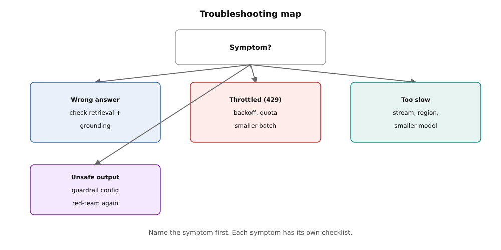
How to read this. Start at the symptom box. Follow the arrow to your symptom. Each box lists the first checks: wrong answer means check retrieval, 429 means backoff and quota, slow means stream or change region.
Questions
MULTIPLE CHOICE
EASY
You add a new action group to a Bedrock agent. The agent never calls the new tool. The Lambda works when you test it directly. What is the MOST probable cause?
- A. The agent's foundation model is too small to use tools.
- B. You did not run the prepare-agent step after the configuration change. The agent still uses the old prepared version.
- C. The agent needs more Provisioned Throughput.
- D. The knowledge base sync is stale.
MULTIPLE CHOICE
MEDIUM
A team bought Provisioned Throughput for steady baseline traffic. The team still sees throttling exceptions during peaks. Their code invokes the base model ID. Costs are already high. What is the BEST fix?
- A. Buy more provisioned model units to cover the peaks.
- B. Change the code. Invoke the provisioned model ARN. Baseline traffic uses the purchased capacity.
- C. Switch all traffic to a smaller, cheaper model.
- D. Disable retry logic. This reduces request volume.
MULTIPLE RESPONSE
HARD
You switch a knowledge base to a new embedding model. Ingestion jobs fail. Search quality collapses. Select TWO correct statements about the fix.
- A. You must rebuild the vector index. The new model makes different-dimension vectors in a different vector space.
- B. Increasing Provisioned Throughput will solve the ingestion failures.
- C. You must re-embed the corpus with the new model. You cannot reuse old vectors.
- D. Changing the chunking strategy alone will realign the dimensions.
Why this comes next. Signature recognition needs evidence. Chapter 10 shows where to find it. Find it in CloudWatch metrics, invocation logs, and CloudTrail. Each answers a different question.
Next: Debug with CloudWatch, logs, and CloudTrail.
10. Debugging with CloudWatch Logs and CloudTrail
There are two AWS services. They answer two different questions. CloudWatch tells you what the application did. CloudTrail tells you who called what. The exam often mixes them up.
Operations vs audit
Amazon CloudWatch is the metrics and logs service. For GenAI, it gives you Bedrock metrics. These metrics include Invocations, InputTokenCount, OutputTokenCount, InvocationThrottles, and latency percentiles. CloudWatch Logs stores application logs and prompt/response logs. Logs Insights queries these logs.
For example, it can show all prompts where the system blocked the response. CloudWatch has anomaly detection and alarms. These detect token-bursts or cost spikes. You can enable model invocation logging. This records full Bedrock requests and responses to S3 or CloudWatch Logs. You can encrypt these logs with KMS.
AWS CloudTrail is the audit service. It records every API call. It records who called the API, when, from where, and with what parameters. For GenAI, it answers "which IAM role invoked which model at 3 AM". It also answers "who changed the guardrail policy yesterday". CloudTrail does not record application content or performance metrics.
CloudWatch is for operations. CloudTrail is for audit. GenAI failures hide in places that traditional monitoring cannot see.
A prompt that slowly becomes a jailbreak shows in invocation logs. It does not show in CPU graphs. A cost spike from a runaway agent loop shows in token metrics. It does not show in error rates.
When something changes unexpectedly, you ask "who changed what". Only an audit trail answers this question. Together, CloudWatch and CloudTrail cover the full debug loop. CloudWatch shows the anomaly. Logs Insights shows the content. CloudTrail shows the actor.
Metrics flow: Bedrock sends per-model metrics to CloudWatch automatically. You build dashboards for invocation counts, token in/out, throttles, and latency. You set anomaly-detection alarms on token spend. Log flow: Your application sends prompts, responses, guardrail traces, and agent reasoning traces to CloudWatch Logs. Logs Insights queries these logs.
You can filter by guardrail block. You can group by error type. You can sample prompts for confusion analysis. Invocation logging: Enable Bedrock model invocation logging. This captures full request/response pairs to S3 or CloudWatch. In compliance environments, encrypt logs with KMS or disable logging.
Logs may contain PII. Audit flow: CloudTrail logs every Bedrock, agent, and KB API call. It logs the identity and parameters. If a guardrail policy changes overnight, CloudTrail names the IAM principal and the exact API call. For distributed debugging, AWS X-Ray traces multi-step agent and FM call chains. It shows where latency builds across Lambda, Bedrock, and tool calls.
A team sees the daily token bill triple overnight. There is no traffic increase. Debug path: The CloudWatch OutputTokenCount metric shows the spike started at 02:00. Logs Insights shows one session generating 40,000-token responses in a loop.
The agent trace shows a tool returning an error. The agent retries forever. CloudTrail shows no config change. This rules out a bad deploy.
The fix: A Step Functions stopping condition caps agent iterations. Total debug time is under one hour. Each service answered its own question: what (metrics), content (logs), who (trail). For example: Model invocation logs for a busy app can reach gigabytes per day. Use S3 lifecycle policies to remove old logs. Sample logs instead of storing everything in high-volume environments.
Trap.
Do not use CloudTrail for performance monitoring. Do not use CloudWatch for audit. The exam asks "find which user invoked the model". Use CloudTrail for this. The exam asks "detect abnormal token spend in near real time".
Use CloudWatch metrics with anomaly detection for this. A second trap: building Glue and Athena pipelines for real-time hallucination detection. This is a high-overhead distractor. The managed answer is Bedrock evaluation jobs with judge metrics. Use CloudWatch anomaly detection.
Read the diagram: The GenAI app on the left sends two types of evidence. Two arrows leave it. The upper arrow (what it said): Prompts, responses, traces, and metrics go to CloudWatch Logs. You investigate behavior and content here. The lower arrow (who called what): Every API call with identity, time, and parameters goes to CloudTrail. You investigate changes and access here.
On the right, metrics feed dashboards and anomaly alarms. When the alarm sounds, start at the dashboard. Drill into logs for content. Check the trail for the actor. What breaks: If invocation logging is off, you have no prompt/response forensics. If a trail has no log file validation or restricted access, the audit is not trustworthy.
Exam framing.
"Near-real-time detection of hallucinations plus abnormal token spend with minimal custom work" points to Bedrock evaluation jobs (judge metrics). It also points to CloudWatch anomaly detection on token metrics. "Determine which IAM role changed the guardrail configuration" is pure CloudTrail. "Analyze prompt and response patterns for confusion" is CloudWatch Logs Insights. The exam rewards the managed, low-overhead answer every time.
Questions
MULTIPLE CHOICE
EASY
An administrator needs to find which IAM principal changed a Bedrock guardrail policy last Tuesday. Which service answers this?
- A. AWS CloudTrail, by querying the API call history for the guardrail update.
- B. Amazon CloudWatch metrics on guardrail invocations.
- C. CloudWatch Logs Insights over application logs.
- D. AWS X-Ray trace analysis.
MULTIPLE CHOICE
MEDIUM
A team wants near real-time alerts. The team wants alerts when token spend increases too much. The team also wants to check the prompts that cause the increase. Which combination is the most correct?
- A. CloudTrail Insights and S3 access logs.
- B. Use CloudWatch anomaly detection on token-count metrics. Set an alarm. Use Bedrock model invocation logging. Query the logs in Logs Insights.
- C. A Glue ETL job writes daily reports to Athena.
- D. Manually check the AWS billing console every day.
MULTIPLE RESPONSE
HARD
A healthcare startup must debug a GenAI application. The startup must protect patient data in logs. Select two correct practices.
- A. Encrypt model invocation logs with KMS. Or disable invocation logging in the compliance environment.
- B. Use CloudTrail to monitor prompt content. This finds PII leaks.
- C. Apply token-level redaction to decision logs. Do this before storage.
- D. Store full unencrypted prompts in CloudWatch Logs. This makes debugging easier.
Why this comes next. Debugging finds what did not work. Chapter 11 checks the harder property. This property provides a base. It proves the model does not hallucinate.
Next: Check grounding and control hallucination.
11. Validating grounding and hallucination control
Hallucination is a GenAI failure. Users see this failure first. Contextual grounding checks make the model use only sources. This changes a prompt wish into a measured control.
From prompt wish to enforced control
Grounding means the model response uses source content for every fact. You provide this source content. It is usually retrieved chunks. A hallucination is a claim with no source support.
This includes invented facts, wrong numbers, or answers from missing context. Contextual grounding checks are a Bedrock Guardrails policy. This policy checks grounding automatically. You give the source content and the model response.
The check scores if the response has a base in the source. It blocks or flags ungrounded output. You set a threshold. This is different from Automated Reasoning checks. Automated Reasoning checks verify output against formal policy rules. Grounding checks ask: "Does the source support this?" Automated Reasoning asks: "Does this break the written policy?"
Prompt instructions like "use only the provided context" reduce hallucinations. But they do not remove all hallucinations. You cannot measure them. An ungrounded answer is a risk in RAG apps for customers.
This includes wrong refund policies, invented product details, or fake legal citations. Grounding checks add a runtime enforcement layer. It has a numeric threshold. Grounding becomes a tested property of each response. It is not just a hope about prompt words.
How it works: Provide source and response. The grounding check gets the source content. This includes retrieved chunks or reference documents.
It also gets the generated response. The check extracts and verifies claims. It breaks the response into facts. It checks each fact against the source.
It makes a grounding score. You set a threshold. The system blocks or flags responses below this score. A higher threshold means fewer hallucinations. It also means more false blocks on borderline answers. Placement: Grounding checks run as a guardrail policy.
They can apply to inputs, outputs, or both. Use inline guardrail config in Converse or the standalone ApplyGuardrail API. Grounding validation also happens offline. Faithfulness metrics in RAG evaluation (chapter 6) measure the same property. They measure it across your dataset. Golden datasets with known hallucination traps verify the check catches them.
Here is an example: A team sets the grounding threshold at 0.75. This is for a product-support assistant. They use a 300-question golden set. This set has 40 known hallucination traps. The check blocks 37 of the 40 traps. This is a recall of 0.925.
It falsely blocks 8 correct answers. The team reviews this precision cost. They change the threshold to 0.70. Traps caught decrease to 35. False blocks decrease to 3. The business accepts 35 of 40.
The offline faithfulness evaluation catches the remaining traps. This evaluation controls releases. This shows: The threshold is a business decision. It balances hallucination recall against false-block problems. You must set it with a seeded dataset. Do not guess the value.
Trap.
Do not confuse contextual grounding with Automated Reasoning. The exam asks about this pair directly. "Verify the answer has support from the retrieved documents" is contextual grounding. "Verify the answer obeys the formal refund policy written as logical rules" is Automated Reasoning. Grounding checks evidence.
Automated Reasoning checks logic. Here is a second trap: Do not think a grounding check replaces RAG evaluation. The check enforces at runtime. The evaluation measures across the dataset. You need both.
Read the diagram: The source context on the left shows retrieved chunks. Highlighted lines are facts available to the model. The model cannot claim anything not highlighted. The model answer on the right has three sentences. Thin lines connect the first two sentences to their source lines.
These sentences have a base. The red X sentence has no source line. This is a hallucination. The grounding check flags this hallucination. It blocks it if it is past the threshold. The magnifier is the grounding check itself.
It is the guardrail policy. It does the verification at runtime. It scores against your threshold. What can break: If retrieval returns wrong documents, the check enforces grounding to wrong sources. Grounding checks verify support, not truth. Retrieval quality is still important.
Exam framing.
"A RAG application must find when responses do not have support from retrieved sources. It must enforce this at runtime." Correct: use contextual grounding checks in Bedrock Guardrails with a threshold. Distractors: Denied topics block subjects, not hallucinations.
Word filters check exact strings only. "A stronger prompt" is not enforced or measured. The difference between grounding and Automated Reasoning appears as a direct definition question. Match the scenario verb to the control.
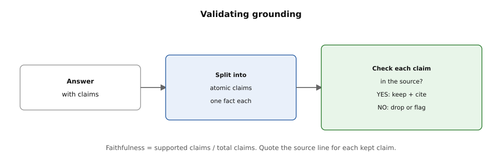
How to read this. Read left to right: the answer, split into one-fact claims, each checked in the source. Keep and cite the supported ones, and drop or flag the rest. Faithfulness equals supported claims over total claims.
Questions
MULTIPLE CHOICE
EASY
A customer-facing RAG assistant sometimes invents product details. These details are not in the knowledge base. The team needs runtime enforcement. Responses must stay supported by retrieved sources. What should they use?
- A. Bedrock Guardrails do contextual grounding checks. The guardrails use a configured threshold.
- B. A denied-topics policy blocks product discussions.
- C. Word filters list all product names.
- D. Use a lower temperature on the generation model.
MULTIPLE CHOICE
MEDIUM
A team must check two properties. (1) Support answers use the retrieved help articles. (2) Refund decisions follow the company refund policy. The policy is logical rules. Which control pair is correct?
- A. (1) Automated Reasoning checks, (2) contextual grounding checks.
- B. (1) Contextual grounding checks, (2) Automated Reasoning checks.
- C. (1) Denied topics, (2) word filters.
- D. (1) Sensitive information filters, (2) content filters.
MULTIPLE RESPONSE
HARD
A team combines runtime grounding checks with offline evaluation. Select two true statements about this layered approach.
- A. The grounding check enforces per-response grounding at runtime. It uses a threshold.
- B. Offline faithfulness evaluation measures grounding across the dataset. It gates releases.
- C. The grounding check makes retrieval quality evaluation not necessary.
- D. Raising the grounding threshold always makes answer quality better. There are no trade-offs.
Why this comes next. Grounding is about truthfulness. Chapter 12 tests the other half of safety. This is red teaming. It probes how the system can misbehave.
Next: Test safety with red teaming.
12. Testing safety: red-teaming basics with AWS tooling
Guardrails are good only if they survive attacks. Red-teaming is the practice of attacking your own app. Do this before someone else attacks it.
Attack your own app first
Red-teaming is systematic adversarial testing. You try to make your GenAI app misbehave. You use prompt injection, jailbreaks, data exfiltration probes, and edge-case inputs. Then you fix what breaks. The "red team" is the attacker.
The "blue team" builds the defenses. AWS tools combine several mechanisms for red-teaming. Bedrock Guardrails detect prompt attacks. This content filter spots injection and jailbreak attempts. Evaluation jobs use harmfulness and refusal metrics.
They score how the app handles adversarial prompts at scale. Automated Reasoning checks verify policy compliance. They do this deterministically. Human red teams craft creative attacks. These are your security staff or an AWS-managed team. They imagine attacks no automated suite can.
Every safety control is a hypothesis. It is a hypothesis until someone attacks it. A denied-topics policy looks complete. It looks complete until a red-teamer phrases the banned request. They phrase it as a hypothetical, a translation task, or a role-play.
Guardrail thresholds look correct. They look correct until adversarial prompts show they block obvious attacks. They miss subtle attacks. Red-teaming finds these gaps in a controlled setting. The finding becomes a new test case. It does not become a headline.
Under the hood: Build an adversarial suite. Collect attack prompts across categories. These include direct jailbreaks like "ignore your instructions".
They include indirect prompt injection. This is malicious instructions hidden in retrieved documents or tool outputs. They include PII extraction probes. They include disguised disallowed-content requests.
They include multi-turn attacks. These build trust before striking. Run at scale. Feed the suite through Bedrock evaluations. Use harmfulness and refusal metrics. The judge scores if the app refused correctly.
It scores if the app complied safely or broke. Attack the retrieval layer too. Red-team the RAG pipeline specifically. Use poisoned documents in the KB. Use injection payloads in web-crawled sources. Use prompt-injection strings inside tool outputs for agents.
Do a human creativity round. Automated suites cover known patterns. Human red-teamers invent new ones. Their successful attacks become new automated test cases. The suite grows with every round. Fix and re-test.
Tune guardrail policies. Harden system prompts. Add input sanitization. Then re-run the full suite. Confirm the fix. Check for regressions.
Here is a worked example. A team red-teams a finance assistant. They use 150 adversarial prompts.
Baseline: 22 prompts produce policy-violating or unsafe responses. This is a 14.7 percent break rate. Analysis shows 15 of the 22 are indirect prompt injections. The system hides them in retrieved KB documents.
The input guardrail never sees them. This is because it only scans the user message. The fix: Apply guardrail scanning to retrieved context. Apply it to user input too. Add an instruction hierarchy note in the system prompt. Re-run: 3 of 150 break.
This is 2 percent. All three are new multi-turn attacks. They become new test cases. This is illustrative: The highest-value finding is usually architectural. It is about where the guardrail scans. It is not about threshold tuning.
Trap.
"Our guardrails passed the default tests, so we are safe." Default tests cover default attacks. The exam tests this with scenarios. The app is attacked through the retrieval layer or tool outputs. Guardrails only scan user input.
Red-teaming must cover every input channel. These are user messages, retrieved documents, tool outputs, and multi-turn conversation history. A second trap: Treat red-teaming as a one-time event. New attack techniques appear constantly. The suite must be re-run on every significant change.
Read the diagram. The red-team figure on the left starts attack arrows. These attacks are jailbreaks, injections, exfiltration probes, and disguised requests. The center guardrails shield is the defense layer.
Two arrows bounce off. Red X marks show blocked attacks. The shield must cover all input channels. It must not cover only user messages. The right findings report holds the valuable arrow.
This arrow passed through. The team documents each successful attack with severity. It becomes a permanent regression test. A shield that scans only user input breaks. Attacks arrive via retrieved documents or tool outputs. Red-team every channel that the model reads.
Exam framing.
A team must test their assistant for jailbreak and prompt-injection attacks before launch. Correct: use an adversarial test suite.
Use Bedrock evaluations with harmfulness and refusal metrics. Use human red-team review. Distractors are wrong. "Enable guardrails" alone is an untested defense.
"Run automatic evaluation" is wrong. Accuracy does not measure attack resistance. Watch for the retrieval-channel twist. "Attacks hidden in knowledge base documents" means scanning retrieved context. It means red-teaming the RAG pipeline. It does not mean only user inputs.
Questions
MULTIPLE CHOICE
EASY
A team wants to check if a customer-facing assistant resists jailbreak and prompt-injection attacks before launch. Which approach is the most correct?
- A. Run automatic evaluation with the accuracy metric on a labeled dataset.
- B. Build an adversarial prompt suite. Evaluate it with harmfulness and refusal metrics. Add human red-team review.
- C. Enable Bedrock Guardrails with default settings. Then launch.
- D. Make the model's temperature lower to reduce creative attacks.
MULTIPLE CHOICE
MEDIUM
A RAG assistant's guardrails scan user messages. But red-teamers exfiltrate data. They use bad instructions hidden inside a synced web document. What is the best fix?
- A. Increase the denied-topics threshold on user inputs.
- B. Extend guardrail scanning and red-team coverage to retrieved content. Review web-source ingestion controls.
- C. Change to a larger generation model with better instruction following.
- D. Stop web crawling for the knowledge base completely.
MULTIPLE RESPONSE
HARD
A company does red-teaming for a production assistant. This happens many times. Select TWO practices for the program.
- A. Run the adversarial suite again on every important change to the prompt, model, or retrieval.
- B. Make every successful attack a permanent regression test case.
- C. Limit testing to user-message inputs. These inputs are the main attack surface.
- D. Consider one successful red-team round as permanent safety certification.
Why this comes next. All methods are in place. Chapter 13 puts it into the pipeline. This includes prompt versioning and eval gates. This makes sure that quality is good for every deploy.
Next: CI/CD for GenAI applications, prompt versioning, and eval gates.
13. CI/CD for GenAI apps: prompt versioning and eval gates
Normal CI/CD sends code. GenAI CI/CD sends prompts, model choices, and retrieval configuration. It checks the quality of each item.
Versioned prompts, gated deploys
CI/CD for GenAI makes the build-test-deploy pipeline bigger. It includes all items that change model behavior. Prompt versioning and eval gates are the two main ideas. Prompt versioning treats prompts as released items. Bedrock Prompt Management stores prompts with versions.
These versions are fixed snapshots. You change a draft. You publish a version. You deploy that version identifier. Rollback is fast. Point the application to the previous version.
Eval gates are pipeline stages. They are usually in AWS CodePipeline. CodeBuild runs the tests. Eval gates run the evaluation suite. They stop the deployment if scores get worse. A common pipeline shape is: commit, build, prompt version publish, eval gate (automatic plus judge metrics on the golden dataset), canary deploy, production.
If you do not use versioning, a prompt change is a production change. No one reviews it. You cannot undo it. If you do not use eval gates, quality problems ship fast. They ship at the speed of the pipeline. Teams put prompts directly into application code.
They find both problems at the same time. Every small change to wording needs a code deploy. Nothing checks if the change helped. Versioned prompts and eval gates give GenAI changes the same rules. Code has had these rules for 10 years. The team reviews, tests, and reverses the changes.
The GenAI pipeline runs in five stages.
- Version the prompt. Authors edit the draft in Prompt Management. Publishing makes an immutable version, for example my-prompt:7. The application uses the version ARN. It does not use the draft.
- Pipeline trigger. A commit or a version publish starts CodePipeline. CodeBuild runs unit tests for the app code. Then CodeBuild runs the eval stage.
- Eval gate. CodeBuild starts Bedrock evaluation jobs. These jobs use the golden dataset for the new prompt version.
- They compare scores to the baseline of the current production version. Thresholds are set. For example, faithfulness must not drop more than 0.03. Toxicity must stay at zero.
- Canary and promote. Passing versions deploy to a canary. This often uses weighted routing or AppConfig flags. People watch production metrics.
- Then the version promotes to full traffic. A failing canary rolls back. It repoints to the previous version ARN. No redeploy is necessary.
- Audit. CloudTrail records every version publish and deployment. The eval reports are in S3. They are release evidence.
A team ships prompt changes two times each week. This is a worked example. Their pipeline: CodeBuild runs a 400-prompt golden eval. This takes about 20 minutes. It costs about $8 in judge costs. This happens on every publish.
Gate thresholds: No metric can go down more than 0.03. Harmfulness must be zero. Cost per conversation must not rise more than 10 percent. Over three months, the gate blocks 11 of 46 publishes. Of those 11, post-mortems show 9 would have caused user-visible regressions. The canary stage uses 5 percent traffic.
It runs for 4 hours. It catches 2 more issues. The offline eval did not find these issues. Both issues relate to real user phrasing. Rollback in both cases is a version-ARN repoint. This takes less than one minute.
Trap.
The application code has versioning. The prompt does not have versioning. The exam will describe a team with "full CI/CD". Their prompts are hardcoded strings. Then the exam will ask why a prompt rollback needs a redeploy. The answer: prompts are configuration.
Configuration needs its own versioning. A second trap: eval gates only run unit tests. Unit tests check code. Only eval jobs check model behavior. A GenAI pipeline without an eval gate is a deployment pipeline. It has no quality check on the thing users experience.

Read the diagram. The commit is the trigger. Code and prompt changes enter the same pipeline. But they have separate versioning. Publishing makes the prompt version.
This is the immutable version artifact. The app will use this artifact by version ARN. This makes rollback a pointer change. The eval gate is the red stop sign. It is the heart of GenAI CI/CD.
Bedrock eval jobs score the new version. They use the production baseline. A failed gate stops the pipeline here. No user sees the change. The canary puts 5 percent of live traffic on the new version. This validates what offline evals cannot.
It validates real user phrasing and real traffic patterns. Full promotion follows clean canary metrics. The dashed rollback arrow is the escape hatch. Repoint to the previous version. No rebuild is necessary. No redeploy is necessary.
Exam framing.
"Marketing needs to change prompt wording often. They need to do this without engineering deploys. Every change must be tested before production." Correct: Bedrock Prompt Management versioning plus a CodePipeline eval gate. Distractors: hardcoded prompts with faster code deploys. This is still a deploy.
It is still untested. Or versioning without eval gates. This is reversible but unmeasured. "Rollback must be instant" points to version ARNs. The distractor is CloudFormation rollback of the whole stack.
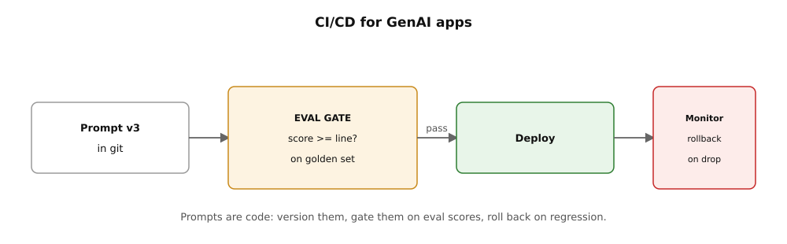
How to read this. The prompt version enters the eval gate. The gate needs a score above the line on the golden set. A pass deploys, and monitoring rolls back on a drop.
Questions
MULTIPLE CHOICE
EASY
A non-technical content team must update assistant wording each week. They must do this without code deployments. Each update needs quality validation. This must happen before users see it. Which solution is MOST appropriate?
- A. Store prompts as string constants in the application repository. Deploy on every edit.
- B. Manage prompts in Bedrock Prompt Management. Use published versions. Gate deployment on Bedrock evaluation jobs in a CodePipeline pipeline.
- C. Let the content team edit prompts directly in production. Use the console.
- D. Send new prompt text to engineers by email. Engineers manually paste the text into the running service.
MULTIPLE CHOICE
MEDIUM
A team's GenAI pipeline runs unit tests. The pipeline deploys on every commit. A prompt change degraded faithfulness last week. The change shipped to all users. What is missing?
- A. More unit tests for the application code.
- B. An evaluation gate runs Bedrock evaluations on a golden dataset. The gate compares against the production baseline before promotion.
- C. A larger canary percentage to detect issues faster.
- D. Provisioned Throughput for the evaluation jobs.
MULTIPLE RESPONSE
HARD
A company needs instant rollback of prompt changes. The company needs a full audit trail of what shipped and when. Select TWO mechanisms that together satisfy this.
- A. Reference immutable prompt version ARNs in the application. Rollback is a pointer change.
- B. Use CloudTrail records of version publishes and deployments for the audit trail.
- C. Keep a single mutable "current" prompt document. Editors overwrite the document.
- D. Store evaluation reports only in the pipeline's temporary build logs.
Next: Answer the questions above. Then go to the main question bank for full exam practice.
You have the full testing and validation tools. These tools are automatic evaluation, judge models, human review, RAG evaluation, evaluation loops, A/B testing, troubleshooting, grounding checks, red teaming, and CI/CD gates. Finish the questions in this volume. Then go to the Question Bank. The Question Bank combines all five domains. This is how the exam combines them.
Domain 5 is complete. It has 13 chapters. These chapters go from why testing is different to CI/CD.
Remember these key exam ideas: Match the evaluation method to the item you measure. Check retrieval before generation. Read the error signature before you fix it. Gate every GenAI change based on measured quality.